승인되면 받는 네 가지
발표자는 오후 4시 16분에 신청서를 내고 4시 19분에 승인 메일을 받았어요. 한 일은 회사 메일로 Console 조직을 만들고 신청서 한 장을 채운 것뿐이에요. 아래 Gmail 화면 오른쪽 위 빨간 테두리에 '4:19 PM (3 minutes ago)'가 찍혀 있어요.
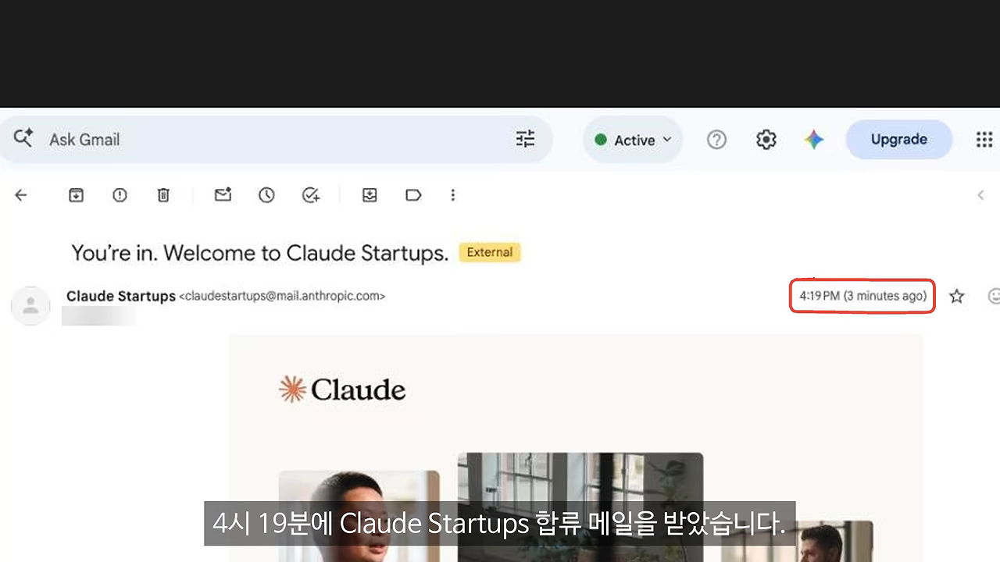
승인되면 받는 것은 네 가지예요. 슬라이드 카드 아래 작은 글씨에 조건이 하나씩 붙어 있어요. Team은 'Premium 5석 무료, 최소 2석부터', API 크레딧은 '받은 날부터 180일', 파트너 혜택은 '합치면 최대 $45K'예요.
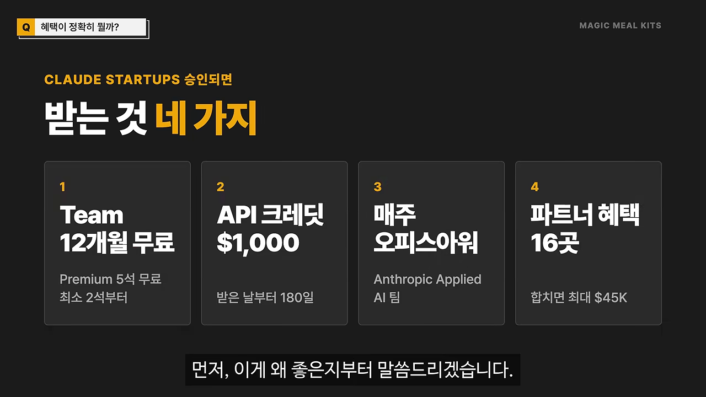
| 혜택 | 내용 | 조건·기한 |
|---|---|---|
| Claude Team | 12개월 무료 | Premium 좌석 5개까지, Team은 최소 2석부터 |
| API 크레딧 | 1,000달러 | 받은 날부터 180일 안에 사용 |
| 오피스아워 | Anthropic Applied AI(Artificial Intelligence) 팀과 상담 | 영상은 '매주'라고 소개 |
| 파트너 혜택 | 16곳의 할인과 크레딧 | 합치면 최대 4만 5천 달러 규모 |
파트너 혜택은 멤버 포털의 카드 목록으로 보여 줘요. 빨간 테두리가 쳐진 ElevenLabs 카드에 '12 months free + 33M characters'가 적혀 있어요. 영상이 짚은 다른 곳은 ClickHouse 클라우드 크레딧 5,000달러, Linear Business 플랜 6개월 무료, Gamma 첫해 25% 할인, Granola Business 플랜 3개월 무료예요.
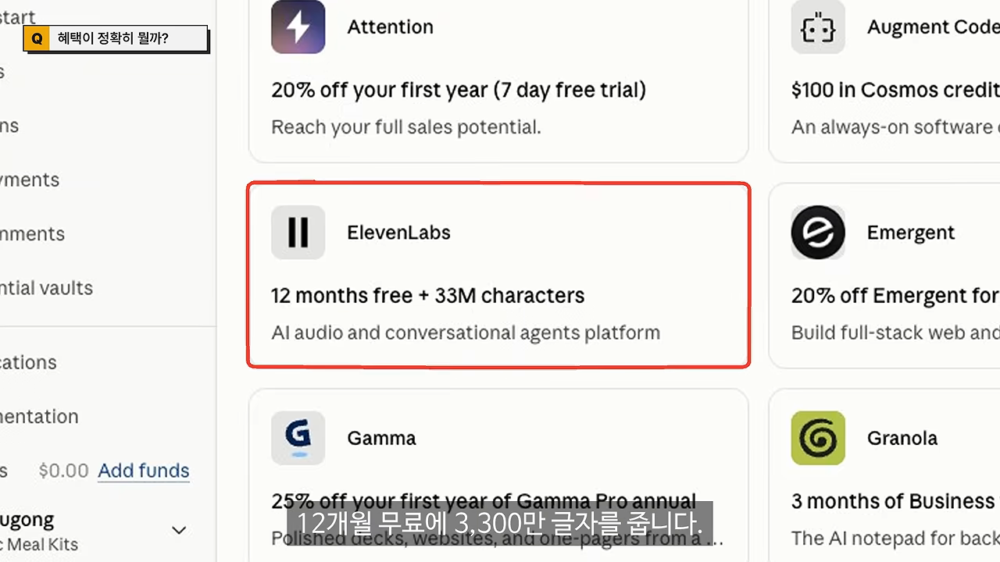
신청 조건과 미리 준비할 것
조건 자체는 느슨해요. 설립 5년 이내이거나, 최근 2년 안에 투자를 받았으면 돼요. 슬라이드 첫 줄 오른쪽에 '투자 없이도 신청 가능'이라고 적혀 있고, 발표자 회사도 투자 없이 신청했어요. 대신 아래 두 줄은 꼭 맞춰야 해요.
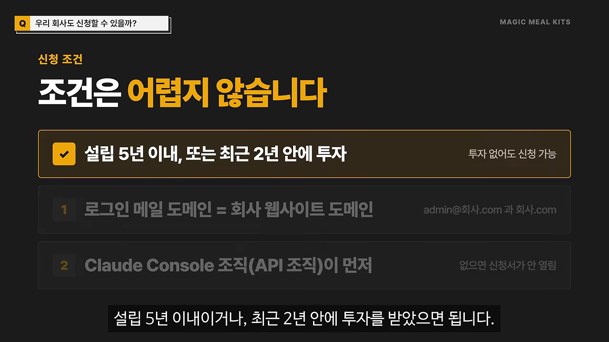
준비물은 두 가지예요. 먼저 열려 있는 회사 사이트가 있어야 해요. 발표자는 Magic Meal Kits 사이트를 그날 열고 바로 신청했어요. 다음은 그 사이트와 같은 도메인의 회사 메일이에요. 발표자는 Google Workspace에서 회사 도메인 별칭 메일을 만들었어요.
영상 전체를 한 줄로 이으면 이런 순서예요. 앞 두 칸이 이 섹션의 준비물이고, 셋째 칸부터 뒤 섹션에서 차례로 다뤄요.
flowchart LR A["회사 사이트 열기"] --> B["같은 도메인 메일로 Console 가입"] --> C["Console 조직 만들기"] --> D["신청서 제출"] --> E["승인 메일"] --> F["멤버 포털에서 Claim"] --> G["Team 결제 화면"]
가입 방법에서 한 번 더 갈려요. 아래 슬라이드의 빨간 X 줄처럼 'Google로 계속하기' 버튼을 누르면 원래 계정 주소로 로그인돼요. 노란 체크 줄처럼 회사 도메인 메일 주소를 직접 입력해야 별칭 메일이 로그인 주소가 돼요.
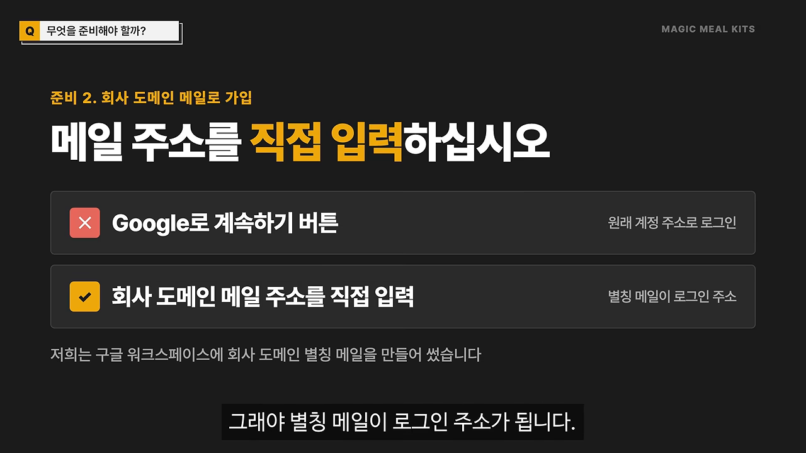
Console 조직부터 만들기
준비가 끝나고 신청 페이지를 처음 열면 신청서 대신 아래 안내가 떠요. 제목이 'Create an API organization first'이고, 본문은 이 혜택이 API 조직에 주는 것이라 먼저 하나 만들고 돌아오라고 말해요. 발표자도 여기서 한 번 막혔어요.
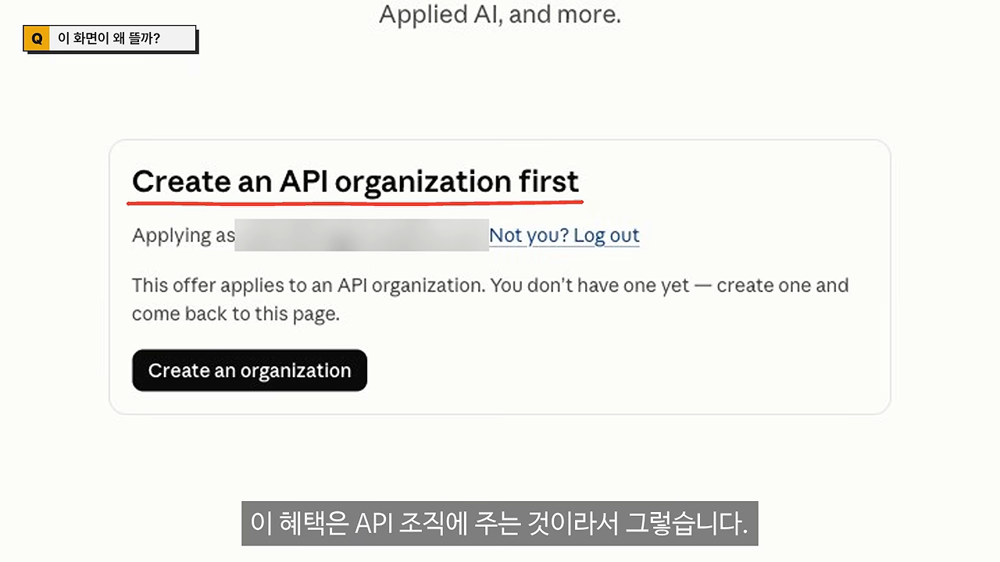
Create an organization을 누르면 Claude Console이 API를 어떻게 쓸지 물어요. 왼쪽 Individual은 혼자 쓰는 계정, 오른쪽 Organization은 팀원을 초대하고 API 키와 결제를 함께 관리하는 조직 계정이에요. 빨간 테두리가 쳐진 오른쪽을 골라요.
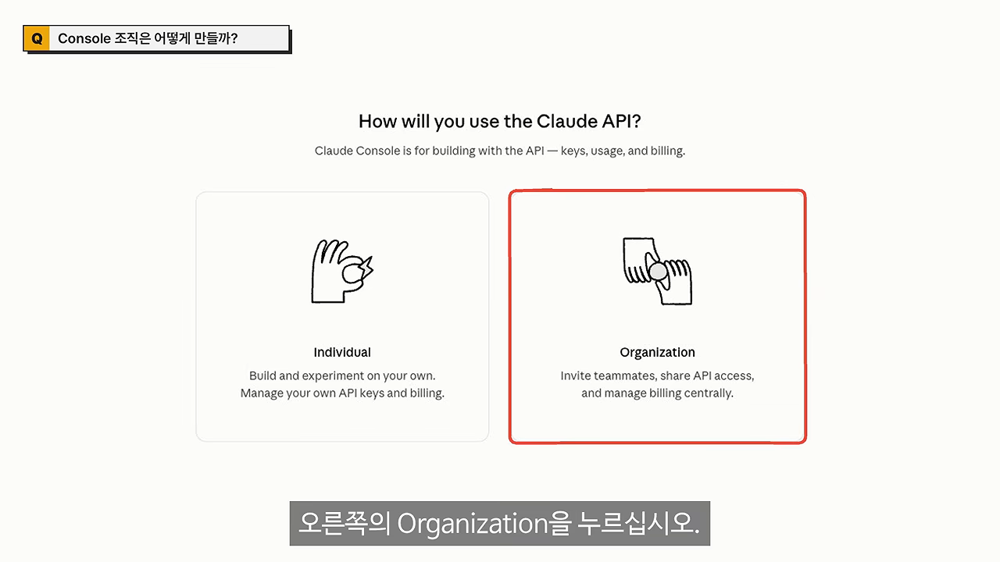
다음은 조직 정보예요. 조직 이름에는 회사 이름 Magic Meal Kits를 그대로 넣었어요. 그 아래 체크 박스는 @magicmealkits.com 메일을 쓰는 사람이 이 조직을 찾아 가입 요청을 할 수 있게 하는 설정이에요. 조직 형태는 Small or medium business, 국가는 회사가 있는 나라를 골라요. 화면에서는 Japan이 골라져 있어요.
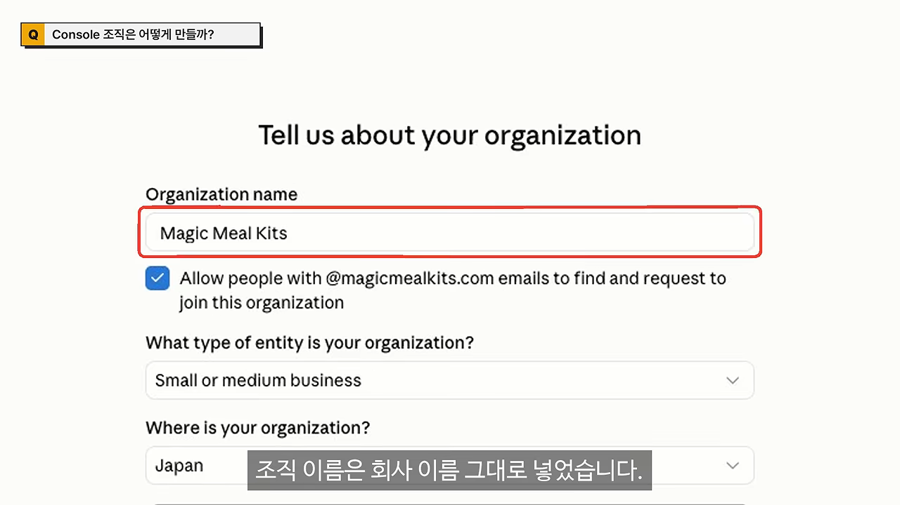
이어서 API 사용 질문이 나와요. 국가를 Japan으로 골랐기 때문에 첫 질문이 일본 밖에서도 쓰는지예요. 발표자는 Yes를 누르고 South Korea를 골랐어요. 고객은 내부와 외부 둘 다라서 Both, 용도 칸에는 MCP(Model Context Protocol) 도구를 만들고 테스트한다는 한두 문장만 적었어요.
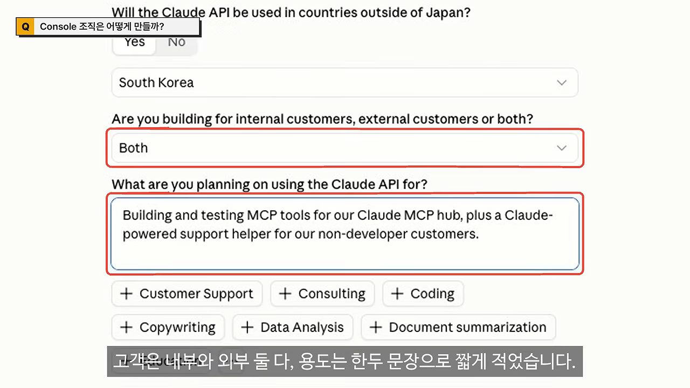
마지막 'A few things to review'에서는 두 가지를 물어요. 소비자에게 법률·의료·금융 조언을 하는 데 Claude를 쓰는지, 18세 미만 대상 서비스에 API를 쓰는지예요. 발표자는 둘 다 No를 고르고 Create account를 눌렀어요.
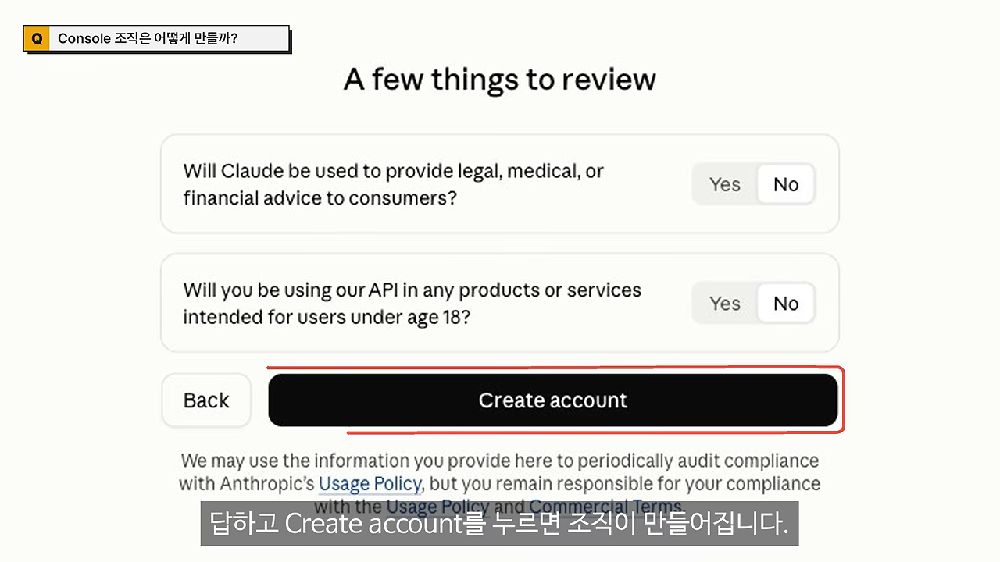
휴대폰에서 Console을 다시 열어 보니 조직 목록에 Magic Meal Kits가 체크된 채 생겨 있었어요. 이름 아래 'Team API plan'이 붙어 있어요.
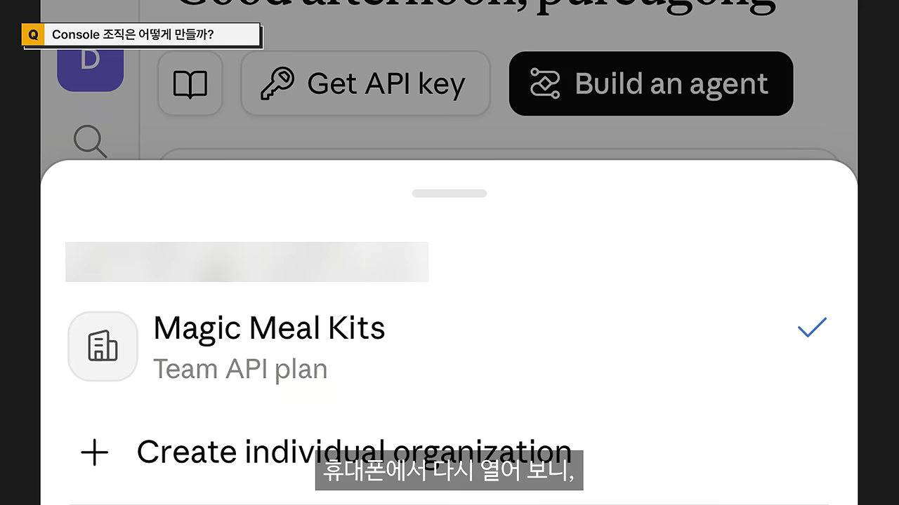
신청서 칸별로 채우기
조직이 생긴 뒤 신청 페이지를 다시 열면 'Apply to the program' 신청서가 나와요. 맨 위 Organization 칸에는 방금 만든 조직이 자동으로 들어가 있어요. 아래 화면은 회사 정보 부분이에요. 웹사이트 https://magicmealkits.com, 국가 Japan, 도시 Tokyo, 업종 Software & SaaS, 설립 2025년 1월, 투자 단계 Not yet raised가 보여요.
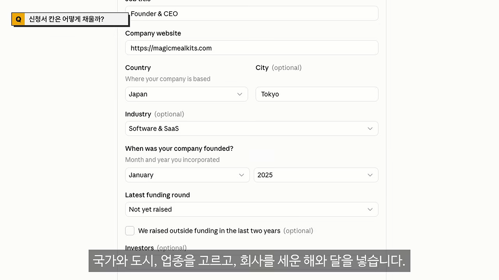
칸별로 정리하면 이래요. 발표자가 실제로 넣은 값을 함께 적었어요.
| 칸 | 무엇을 넣나요 | 발표자가 넣은 값 |
|---|---|---|
| Organization | 자동으로 채워져요 | Magic Meal Kits |
| 이름·회사 이름·직함 | 신청자 정보 | Founder & CEO(Chief Executive Officer) |
| Company website | 메일과 같은 도메인 | magicmealkits.com |
| 국가·도시·업종·설립 연월 | 회사 기준으로 골라요 | Japan, Tokyo, Software & SaaS, 2025년 1월 |
| Latest funding round | 최근 투자 단계 | Not yet raised(아직 안 받음) |
| Anthropic에게 받고 싶은 도움 | 자유 서술 | MCP 도구 설계 피드백, 테스트용 크레딧 |
| 월 AI 지출 중 Anthropic 비중 | 구간 선택 | 81–100% |
| 무엇을 만드나요 | 50자 이상 500자 이하 | 무엇을, 누가, Claude를 어떻게 쓰는지 |
| LinkedIn·소식 메일 | 선택 | — |
| 약관 동의 | 필수 | 체크 |
'How you're building' 아래 두 칸이 회사 이야기를 쓰는 곳이에요. 위쪽 빨간 테두리 칸이 Anthropic에게 받고 싶은 도움이에요. 발표자는 'Mostly MCP'로 시작해서 Hub용 도구 설계 피드백과 테스트용 크레딧을 부탁했어요. 그 아래 지출 비중은 81–100%로 골랐어요.
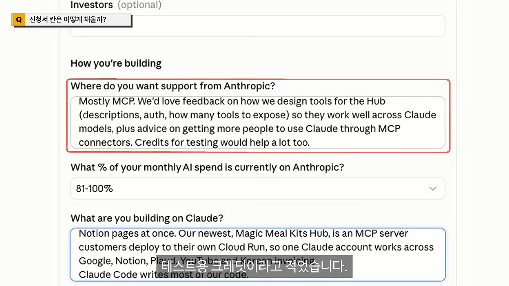
500자 제한에서 한 번 걸려요
'What are you building on Claude?' 칸은 50자 이상 500자 이하로 써야 해요. 발표자는 할 말이 많아 처음에 1,300자쯤 넣었어요. 그러자 칸 테두리가 빨갛게 바뀌고 아래에 'Please write between 50 and 500 characters.'가 떴어요.
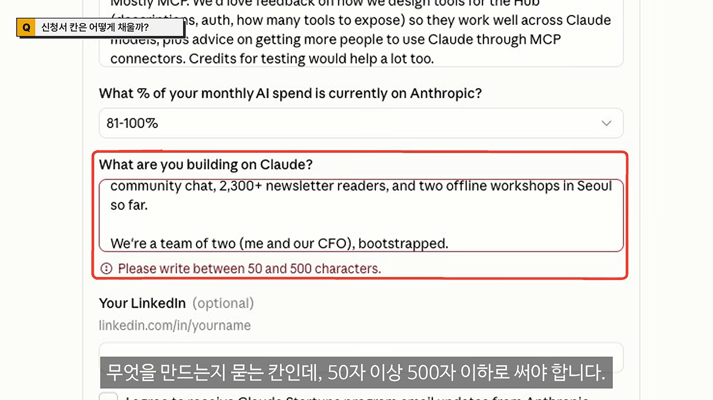
그래서 무엇을 만드는지, 누가 쓰는지, Claude를 어떻게 쓰는지만 남겼어요. 줄인 글은 네 줄이에요. Notion 페이지, 고객이 자기 Cloud Run에 배포하는 MCP 서버 Magic Meal Kits Hub, 그리고 'Claude Code writes most of our code'로 끝나요. 경고 문구는 사라졌어요.
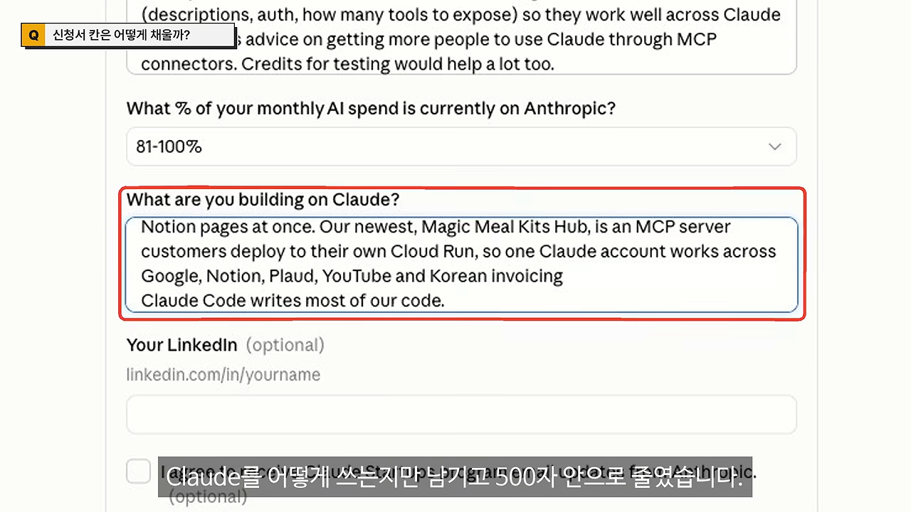
제출하고 3분 뒤 승인
약관 동의를 체크하고 Submit application을 누르면 접수 화면이 나와요. 가운데 빨간 테두리에 'Thanks for submitting!'이 있어요. 이때가 오후 4시 16분이었어요.
4시 19분에 'You're in' 메일이 왔어요. 메일 본문에는 받는 것이 정리돼 있어요. Team 1년과 API 크레딧, 파트너 혜택, 오피스아워와 행사 초대예요. 빨간 테두리 문장은 파트너 VC(Venture Capital)에게 투자받은 회사라면 담당자에게 최대 10만 달러를 더 문의할 수 있다는 내용이에요.
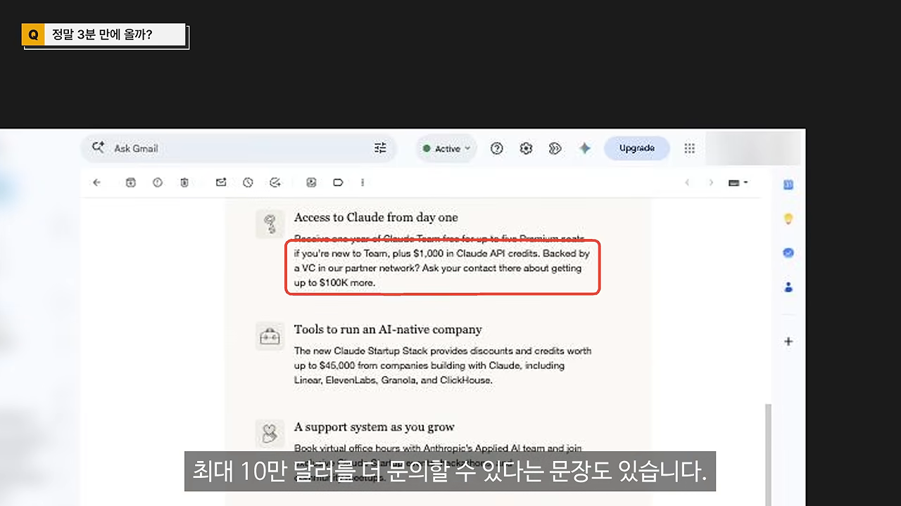
혜택 받기와 Team 결제 화면
승인 메일 가운데의 Redeem your offers 버튼을 누르면 멤버 포털로 가요. 위쪽 카드 세 개가 핵심이에요. 왼쪽부터 Claude Team 12개월(월 최대 625달러 할인), API 크레딧 1,000달러, Applied AI 오피스아워예요. 앞의 두 카드에는 초록 Eligible 표시가 붙어 있어요. 받을 수 있다는 뜻이고, Claim을 누르면 받아요.
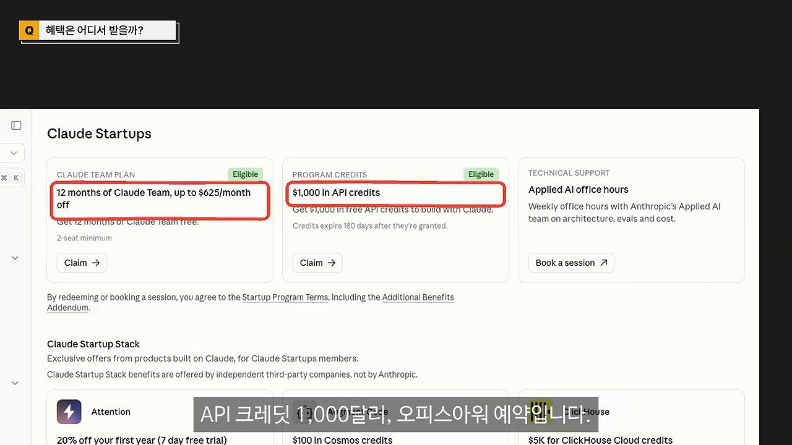
크레딧 카드의 작은 글씨를 확대하면 빨간 밑줄에 'Credits expire 180 days after they're granted.'가 있어요. 받은 날부터 180일 뒤에 사라진다는 뜻이에요. 그 아래 Claude Startup Stack에는 파트너 16곳의 혜택이 있으니 필요한 것만 골라 받으면 돼요.
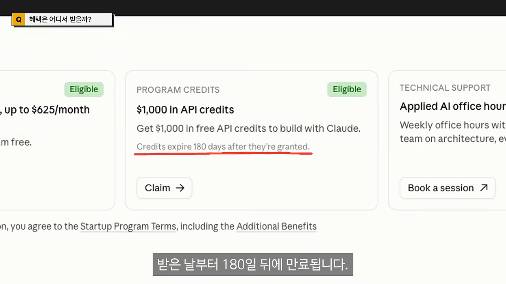
Team 결제 화면 읽기
Team 카드에서 Claim을 누르면 'Choose your seats and plan' 결제 화면이 나와요. Order details에 좌석 두 종류가 있어요. 위가 Standard seats로 좌석당 월 25달러, 아래가 Premium seats로 125달러예요. Premium 설명에는 '5x more usage than standard seats'가 붙어 있어요. 사용량이 다섯 배일 뿐 기능은 같아요. 발표자는 Standard 0석, Premium 5석을 넣었어요.
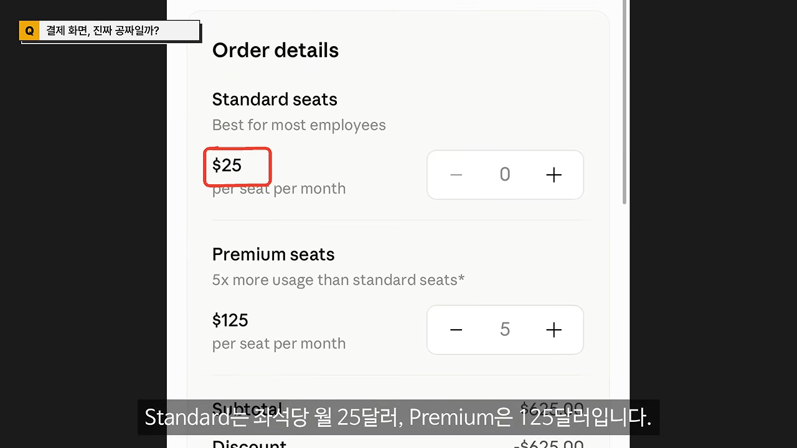
화면을 내리면 계산이 나와요. Subtotal 625달러(125달러 × 5석)에서 Discount '% off for 12 months'로 625달러가 빠져요. 맨 아래 Total due today가 0달러예요. 12개월로 치면 7,500달러어치예요.
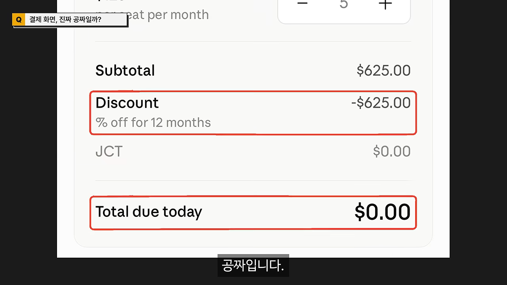
공짜여도 알아 둘 두 가지
첫째, 오늘 낼 돈이 0달러여도 결제 카드는 등록해야 해요. 화면 맨 위 빨간 밑줄 문장이 'Pick your seats and enter a payment method.'예요.
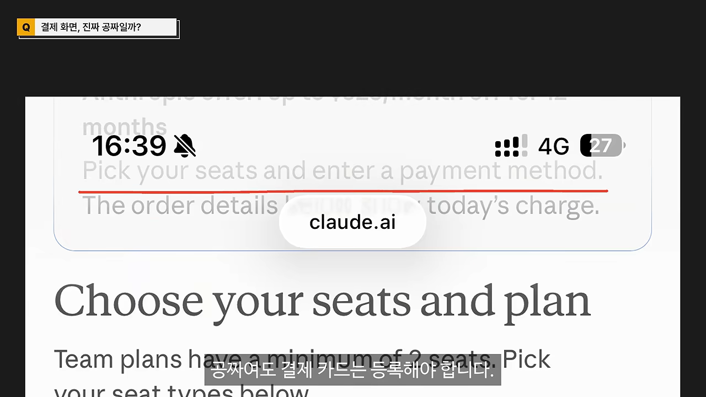
둘째, 할인은 기한이 있어요. 결제 요약 아래 안내문에 '$0/month'로 갱신되다가 10/7/2027부터 정가로 갱신된다고 적혀 있어요. 발표자는 12개월이 끝나기 전에 해지하거나 좌석을 줄이는 방법은 아직 확인하지 못했다고 했어요.
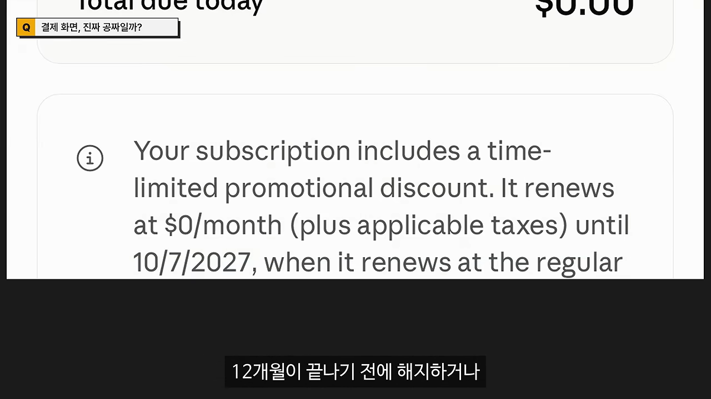
두 혜택의 기한을 한 줄에 놓으면 차이가 보여요. 크레딧은 6개월 무렵에 끝나고, Team 할인은 12개월을 채운 뒤 정가 결제로 넘어가요.
혜택을 제대로 쓰는 세 가지
발표자는 마지막에 쓰는 법을 세 장의 카드로 정리했어요. 카드 아래 작은 글씨가 이유예요. 1번은 '쓰는 사람에게만 배정', 2번은 'Team 좌석이 아니라 $1,000 크레딧', 3번은 '받는 날부터 기간 시작'이에요.
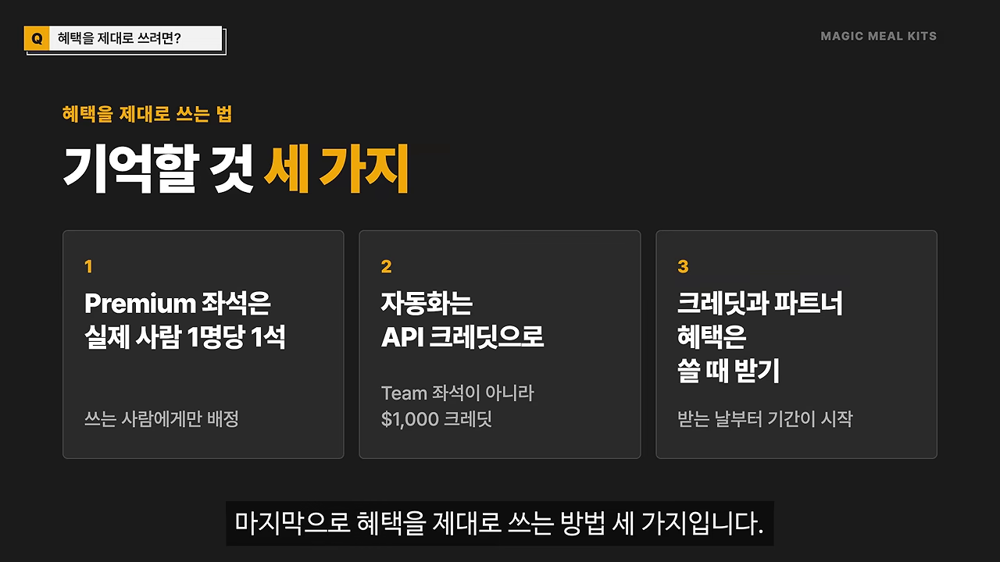
영상은 전체 순서를 네 줄로 마무리해요. Console 조직을 먼저 만들고, 사이트와 같은 도메인 메일로 가입하고, 소개는 500자 안으로 쓰고, 카드 등록 뒤 1년 뒤 정가 자동 갱신을 확인해요.
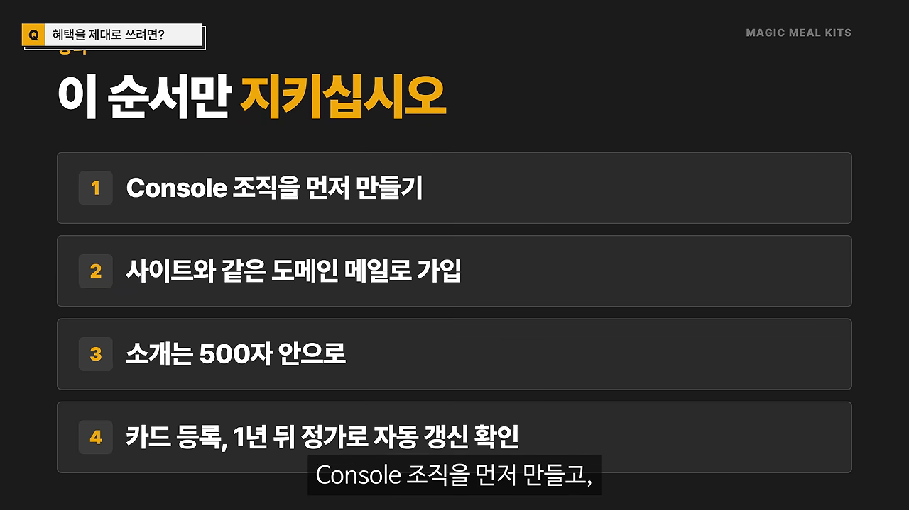